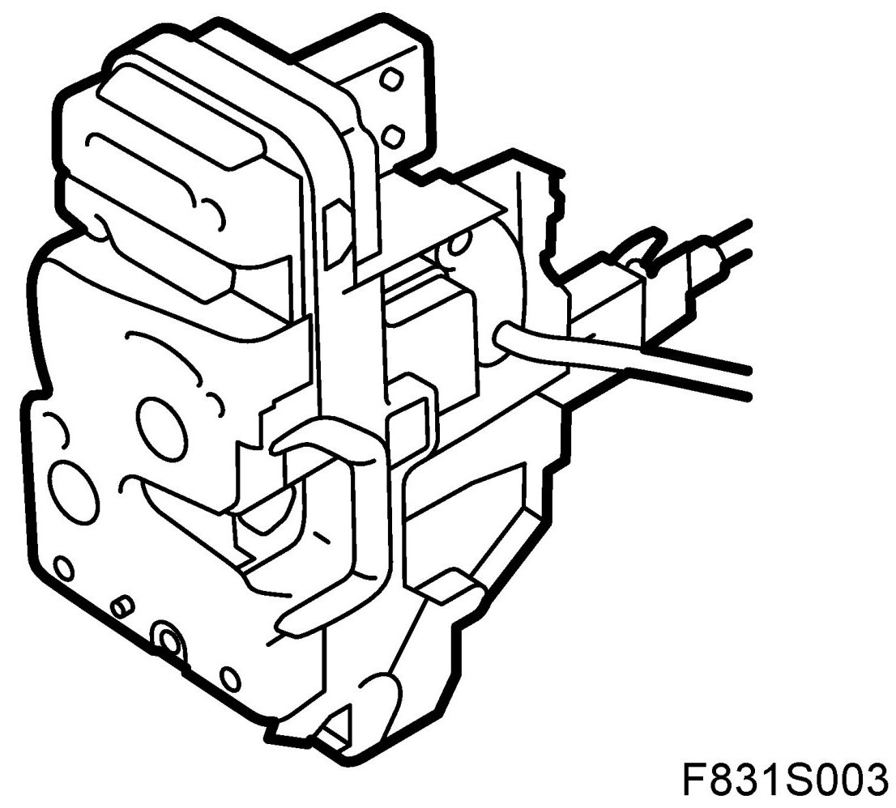
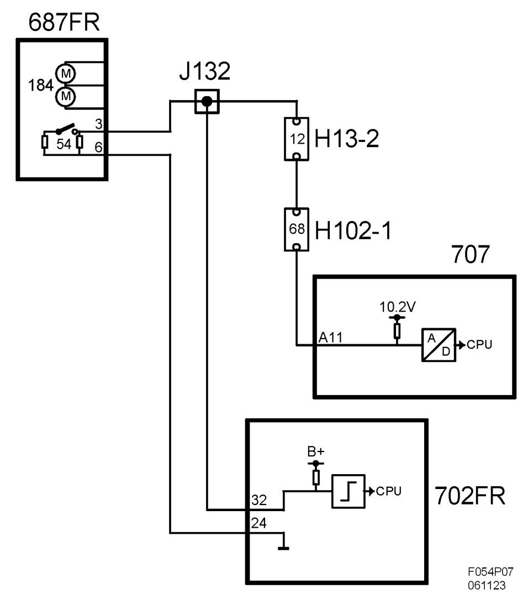

Switch, Door, Front, Right (54FR)
Switch, Door, Front, Right (54FR)
Location
Switch, door, front, right (54FR)
Main task
Used to indicate whether the door is open or closed. The value is used for the anti-theft alarm function and to inform the driver that the door is not closed. BCM sends the status of the switch on the bus.
Type
The switch contains a single pole breaker and 2 resistors. When the door is closed the breaker is open and the resistance is 1.8k ohm. When the door is opened the breaker makes and a resistance of 620 ohm is connected in parallel with the original resistance. The total resistance then drops to 460 ohm.

Connect
The switch is ground from the door control module and is fed with 10.2V via a resistor of 680 ohm integrated in BCM. The voltage measured across the pins will be approximately 4.1V on the breaker is made and approximately 7.4V when open. If the control module sees 10.2V or 0V it will be interpreted as an error in the circuit. In order to save current when the car is not driven BCM will pulse the voltage to switch for 2.5 ms at 375 ms intervals as soon as the car's bus communication stops.
